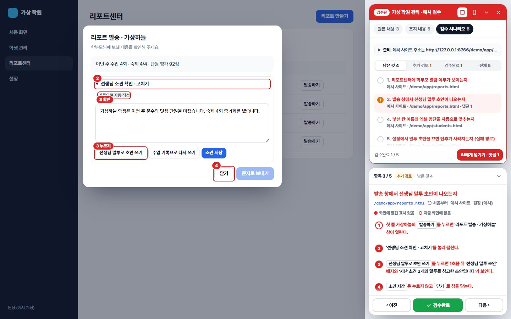

빨간 상자 하나에 고객 요청이 하나씩 나와요. 고객이 한 말, 우리가 한 것, 확인하는 순서를 보고 사이트 위 빨간 표시대로 해 본 다음 [검토 완료] 아니면 [고칠 게 있어요]만 누르면 돼요.

검수 링크는 사이트 주소 끝에 #qa=…가 붙은 주소예요. 한 번 열면 새로고침하거나 다른 화면으로 옮겨도, 새 탭을 열어도 닫기 전까지 검수판이 계속 떠 있어요. 북마크는 필요 없어요.
#qa=off#qa=on 또는 검수 링크를 다시 열기체크와 남긴 말은 대시보드에도 저장돼서 다른 PC나 폰에서 이어서 볼 수 있어요(대시보드에 연결된 링크). 사이트에는 아래 한 줄이 들어 있어야 해요(개발자가 한 번만 넣어요). 평소 방문자에게는 아무것도 불러오지 않아요.
<script>(function(){try{if(window.top!==window)return;var on=function(){return /[#?&]qa=/.test(location.hash+'&'+location.search)};var load=function(){if(document.getElementById('qa-review-js'))return;var s=document.createElement('script');s.id='qa-review-js';s.src='https://honest-family.github.io/qa-review-kit/qa-review.js';document.head.appendChild(s)};if(on()||localStorage.getItem('qa-review-on'))load();else addEventListener('hashchange',function(){if(on())load()})}catch(e){}})();</script>
이 방식은 새로고침하거나 다른 주소로 옮기면 검수판이 사라져요. 가능하면 위 한 줄을 사이트에 넣어 주세요. 아래 단추를 북마크 막대로 끌어다 놓고, 검수 링크를 연 뒤 누르면 열려요.
검수판